Sea bienvenido al gestor
de memoria, tenemos como objetivo
mostrarte de que
manera un
sistema operativo gestiona la
memoria dependiendo del algoritmo
utilizado.
Al comenzar la primera imagen del
simulador que veras es la siguiente:
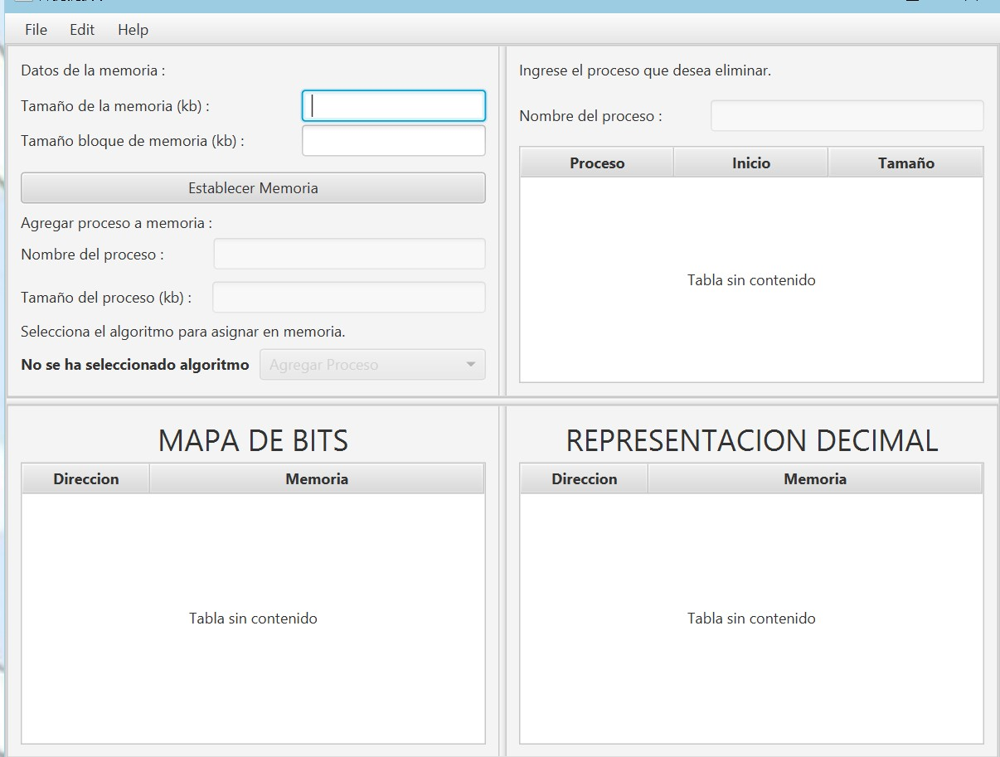
Pantalla de default que se
muestra al usuario
Ahora es importante definir
5 partes:
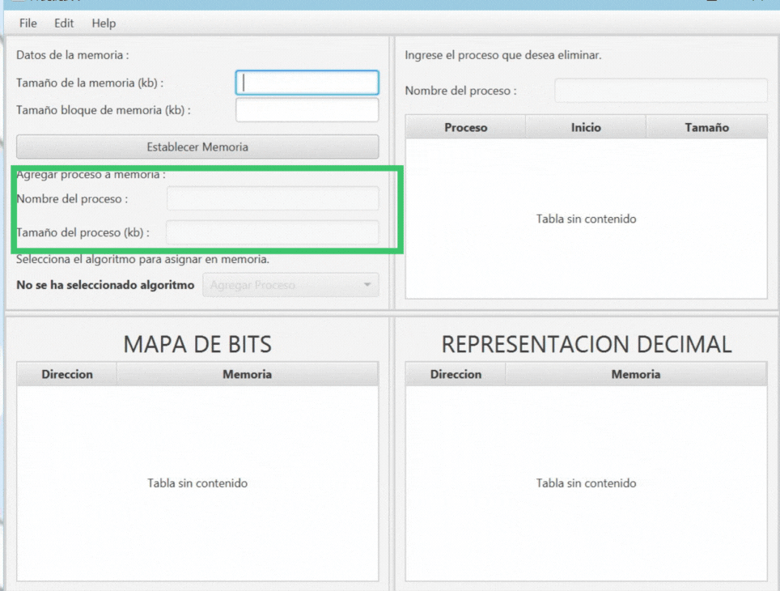
Rectangulo rojo datos de memoria
Rectangulo verde agregar proceso a memoria
Circulo morado representación de mapa de
bits
Cuadrado amarillo parte para eliminar un
proceso
Circulo azul representación decimal
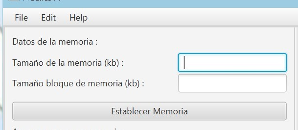
Para iniciar el simulador debemos
iniciar por el campo de agregar proceso nos
define 2 campos el nombre de proceso y tamaño de
proceso
El boton establecer memoria
El campo de datos de memoria tiene
distintos campos a llenar como el tamaño de
bloques y tamaño de bloque memoria.
Tenemos la opcion de elegir el algoritmo
para asignar memoria
Para poder eliminar un proceso
tenemos el campo para eliminarlo tan solo
con dar el nombre.
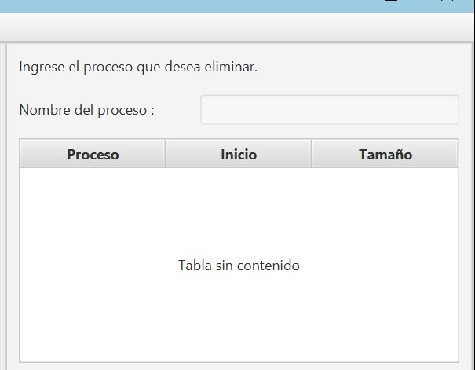
Visualmente tambien tenemos la
parte de mapa de bits y representación
decimal que sera de gran ayuda
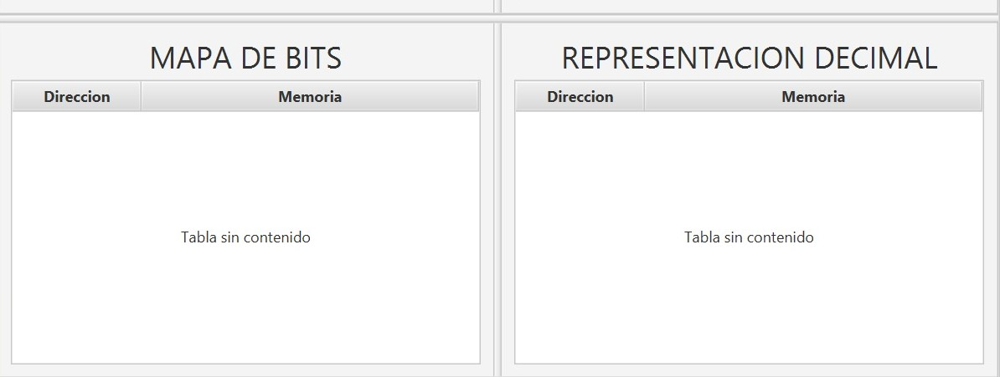
Ahora probaremos el simulador
Funcionamiento de Administrador de memoria
Instrucciones de uso:
Ingresaremos los de la memoria:
Osea su tamaño de memoria y tamaño de bloque
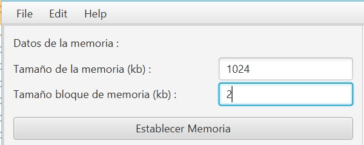
Proseguimos a agregar procesos de la memoria
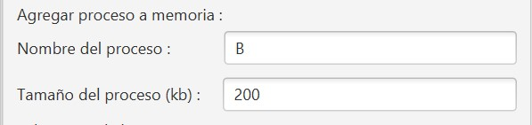
Continuamos en elegir el algoritmo
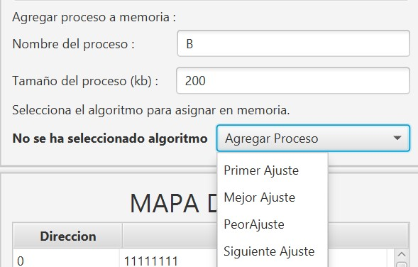
Nota: No debemos olvidar llenar ningun campo
Hemos de notar que cada que agreguemos un proceso se vera reflejado
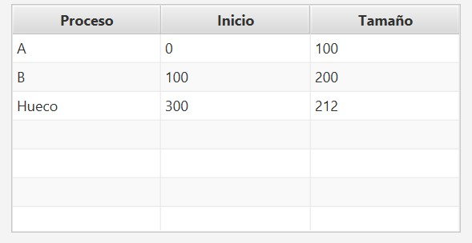
Al ir agregando tambien automaticamente se iran visualizando el mapa de bits y la representación decimal
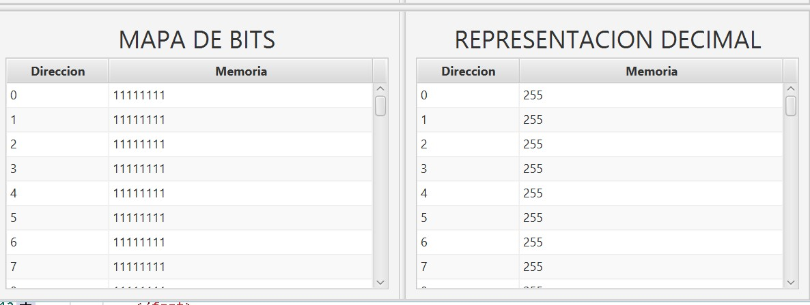
Finalmente si deseamos eliminar algun proceso podemos hacerlo con solo escribir su nombre, tambien se elimina de la tabla en automatico
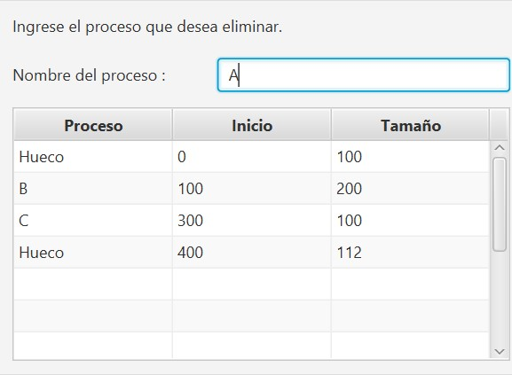
Como adicional podemos visualizar el siguiente simulador con tan solo un boton